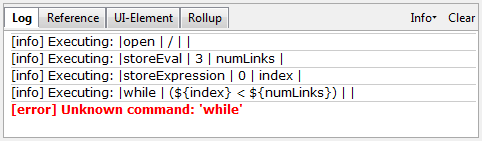

下面成对的图片/解释列表描述了 Selenium IDE 中经常会出现的问题及原因：
Table view is not available with this format.
这种格式的表格视图不可用。
Selenium IDE 启动时这个消息偶尔会显示在表格视图中。Selenium IDE 的工作区将会关闭并重启。要想了解更多信息，请见 issue 1008。如果你能复现这个问题，请提供具体细节以便我们修复此问题。
error loading test case: no command found
测试用例加载错误:命令没有找到
你一定是用“文件 => 打开”试图打开一个测试套件文件。请使用“文件 => 打开测试套件”菜单进行操作。
一个改进请求已提交了，希望改善这个错误消息。请见 issue 1010。
这种类型的错误可能表明一个时间问题，例如，命令中定位器指定的元素在命令执行的时候没有完全加载。尝试在命令前面插入一个 pause 5000 的命令来确定是否确实是与时间相关的问题。如果是这样，在失败的命令之前使用一个适当的 waitFor* 或 *AndWait 命令。
类似上面的例子，你在 open 命令中，试图使用变量而导致失败，提示你在使用变量中的值之前并没有创建这个变量。这是由于把变量的值字段，应该放在目标字段。在上面的示例中，store 命令的两个参数顺序放反了。对于任何 Selenese 命令，第一个参数必须在目标字段，第二个参数（如果有的话）必须在值字段。
error loading test case: [Exception... “Component returned failure code: 0x80520012 (NS_ERROR_FILE_NOT_FOUND) [nsIFileInputStream.init]” nresult: “0x80520012 (NS_ERROR_FILE_NOT_FOUND)” location: “JS frame :: chrome://selenium-ide/content/file-utils.js :: anonymous :: line 48” data: no]
测试套件中的某个测试用例无法找到。确保测试用例确实位于测试套件中所指定的位置。同时，确保实际的测试用例文件扩展名是 .html ，并且在测试套件文件中指定的也是 .html 扩展名。
一个改进请求已提交了，希望改善这个错误消息。请见 issue 1011。

Selenium IDE 没有载入相应的 js 扩展。确保你在 Options => Options => General 中的 Selenium Core extensions 字段填写了正确的 js 扩展文件的名称和地址。并且，任何时候修改了 Selenium Core extensions 字段的值之后，Selenium IDE 都必须重新启动。